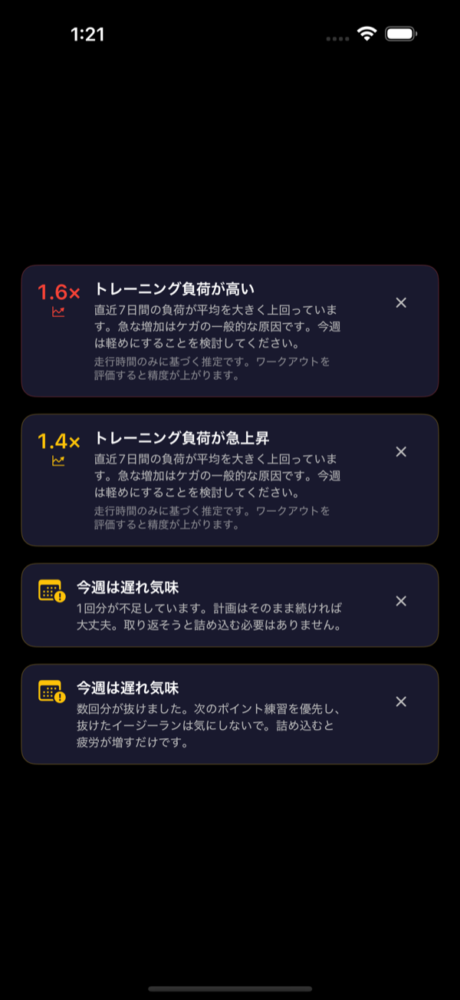

今日走るべき内容が
ひと目でわかる
多くのランニングアプリは、プランを渡すか、走り終えたランを記録するかのどちらかです。RunCraft はその二つをつなぎます——プランはあなたの実際のフィットネスから組み立てられ、ペースは手元でリアルタイムにガイドされ、そしてゴールするたびに答えが待っています：次に何をすべきか。

問題は、努力不足ではなかった
伸び悩むランナーの多くは、怠けているわけではありません。ただ、推測しているのです——ペースを、量を、今日は追い込むべきか抜くべきかを。その「推測」が現れやすい場面を挙げてみます。
どのランも同じ「中くらいにきつい」で終わる
イージー日は回復できるほど楽ではなく、ポイント練習は速く走れるほど新鮮でもない。走り続けているのに、記録は止まったまま。
ネットで見つけたプランは、あなたのために書かれていない
検索で出てきた PDF は、誰か別の人のフィットネスを前提にしています。そのペースはあなたにとってジョグかレースのどちらかで、しかもどちらなのか分かりません。
距離を増やしながら、無事を祈っている
増やしている間はずっと調子がいい——ある日そうでなくなるまでは。どこかが痛み出した時点で、その判断ミスはすでに 3 週間前のものです。
走り終えても、良かったのかどうか分からない
ウォッチは「8km・44分」と言います。でもそれが、今日走るはずだったセッションだったかどうかは教えてくれません。
どの場面にも、答えがある
実際に走った記録から、すべてのペースを
直近のレースかタイムトライアルの記録を一つ入力するだけ。RunCraft はそこから VDOT フィットネススコアを導き、その一つの数値をトレーニングで使うすべてのペースに変換します——「イージー」に具体的な数字がつき、他の強度も同じように。
- Easy・Marathon・Threshold・Interval・Repetition の各ペース
- 5K からフルマラソンまでの現実的なレース予測
- フィットネスの向上に合わせてペースも移動——手動リセット不要

今日のセッションは、もう用意されている
期分けされたスケジュールはレース当日から逆算して組まれるので、白紙から始まる朝はありません。アプリを開く——あるいはロック画面をちらっと見るだけで——今日はもう決まっています。
- ウィジェットで今日のセッションをひと目で
- コンディションが落ちたらリカバリー日を自動調整
- レースの予定がない？ 毎週のシンプルなルーティンで走れます
恥ずかしさからではなく、歩くことから
すべてのプランが 5K から始まる必要はありません。RunCraft のウォーク＆ラン進行は、今のあなたの地点から始めて、30 分連続へと一歩ずつ積み上げます。
- 歩きと走りを交互に、あなたに合わせた時間配分で
- 進行は根性ではなく「週」の単位で
- Apple Watch がなくても OK——iPhone だけでラン全体をガイド
数字ではなく、答えを
すべてのランは「本来こうあるべきだったセッション」と比較して評価されます——リーダーボード上の他人とではなく。狙いどおりだったか、そしてそれがフィットネスに何をもたらしたかが分かります。
- 1km ごとのスプリット（ペース・心拍数）
- プランと比較したエフォート評価
- VDOT の推移は日単位ではなく月単位で
その増やし方を、見張っているものがある
RunCraft は急性：慢性トレーニング負荷比——今週の負荷と、積み上げてきたベースとの比——を追い、その跳ね上がりが怪我になる前に声を上げます。後からではなく。
- 週間負荷トレンドをわかりやすいバナーで表示
- リスク域に踏み込んだら早めに警告
- 80/20 チェックで、イージー日を正直にイージーに

一度組めば、あとは手首の上で
ウォームアップ、本数、リカバリー、クールダウン——ドラッグして並べ、ワンタップで Apple Watch へ。書いたとおりに、そのまま走れます。
- ウォームアップ・メイン・リカバリー・クールダウンのブロック
- ステップごとに距離または時間の目標を設定
- インターバルごとにペースアラートを設定

投稿する価値のある一枚に
写真に値するランもあります。自分で撮った一枚を入れれば、RunCraft がその上にスタッツを重ねてストーリー形式のカードに——ごちゃついたダッシュボードのスクショはもう要りません。
- あなたの写真、あなたのラン、その上にクリーンなスタッツ
- Instagram ストーリーズにぴったりのサイズ
- 投稿前にプレビュー

インターバルの最中に、計算はしたくない
計算はいらない、走るだけ
今日のワークアウトをウォッチからスタートすれば、あとは RunCraft が運びます。ターゲットが表示され、外れたら手首を軽く叩き、残りが何本かも分かる——意識はランに向けたままで。
- リアルタイムのペースターゲットと達成フィードバック
- 心拍ゾーン表示、外れたら触覚アラート
- インターバルの進捗——本数、残り距離
- 文字盤のコンプリケーションに今日のセッションを表示

iPhone がセッションをリアルタイムでミラーリング
ラン中に iPhone を取り出せば、同じワークアウトがそこに——本数カウント、リアルタイムのペース、心拍ゾーンが、手元のウォッチと同期して。ゴールで誰かに手渡せば、今どこにいるかがそのまま伝わります。
- ウォッチの本数進捗をリアルタイムにミラーリング
- ペース・心拍ゾーン・ケイデンスをひと目で
- どちらのデバイスからでも一時停止・終了が可能

感覚ではなく、VDOT に基づいて
ここまでのすべてのペース、すべてのセッション、すべての予測は、一つの場所から来ています：ジャック・ダニエルズの VDOT メソッド——コーチたちが何十年も、一つのレース結果を丸ごとのトレーニング処方へ変換するために使ってきたフレームワークです。RunCraft はトレーニング哲学を発明しません。ランナーと「本当のプラン」の間に長らく立ちはだかってきた計算を代わりにやるだけ——しかも毎日、頼まれなくても。
ご質問・フィードバック
レビュー＆フィードバック
RunCraft が App Store に公開されたら、評価とレビューがフィードバックを届ける一番の場所です——すべて目を通しています。いつでも support@marstudio.app までメールでご連絡いただけます。
プレス
RunCraft について書かれる方へ。ロゴ・スクリーンショット・定型文をご用意しています。プレスキットを開く